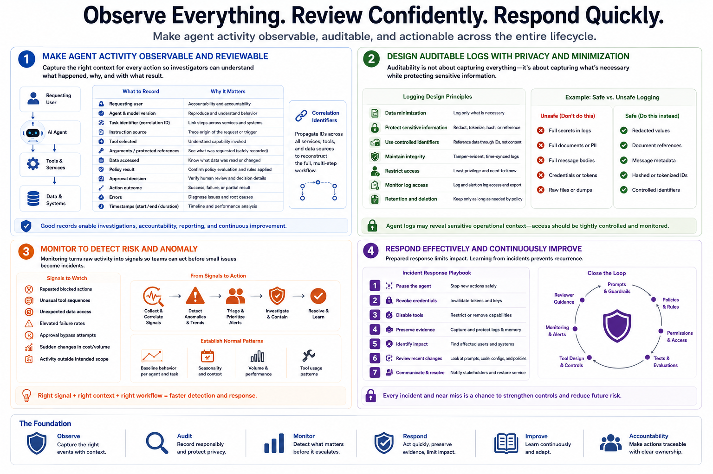

Securing AI Agents
Monitoring, Logging, and Auditability
Connecting to LMS... Progress: in progress
Version 1.0 | Date: 2026-06-21
This course provides educational information about securing AI agent systems. It is not legal advice, product-specific implementation guidance, or offensive security training.

Narration
Agent activity should be observable and reviewable. Useful records may include the requesting user, agent and model version, task identifier, instruction source, tool selected, arguments or protected references, data accessed, policy result, approval decision, action outcome, errors, and timestamps. Correlation identifiers help investigators reconstruct a multi-step workflow across services.
Auditability does not mean copying every secret or full sensitive document into a log. Logging design should balance investigation needs with privacy and data minimization. Sensitive values can be redacted, tokenized, hashed, or referenced through controlled identifiers. Access to agent logs should itself be restricted and monitored because those records may reveal valuable operational context.
Monitoring can identify behavior that needs attention, such as repeated blocked actions, unusual tool sequences, unexpected data access, elevated failure rates, approval bypass attempts, sudden changes in cost or volume, or activity outside the agent's intended scope. Teams should establish normal patterns and connect important signals to triage and response procedures.
Incident response plans should explain how to pause the agent, revoke credentials, disable tools, preserve logs and memory, identify affected users or systems, and review recent changes. Near misses matter too. Investigation findings should feed back into prompts, policies, permissions, tests, tool design, monitoring, and reviewer guidance.